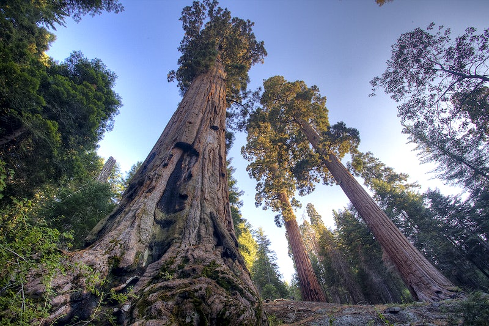
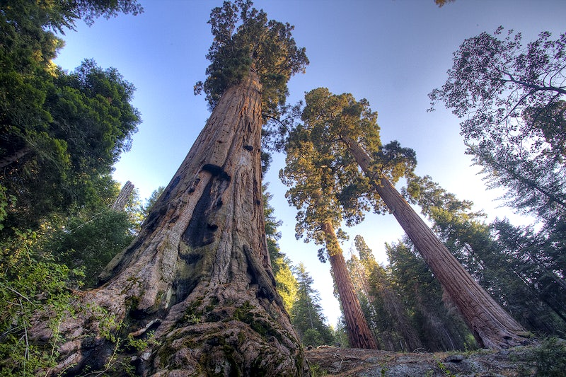

Banff National Park


Geographic Location: North America
Banff National Park is in Western Canada in the province of Alberta. It is near the city of Calgary and situated in the Rocky Mountains. Banff is known for its mountains and natural beauty, along with its plant and animal life. The national park fuels the tourist industry in Western Canada.
Banff has many attractions within its borders including numerous lakes fed by glaciers creating an iconic turquoise color. Banff also borders numerous other national parks further boosting its attractiveness as a tourist location. Banff’s glaciers have been shrinking and may disappear in the next few decades.
Photo Gallery


Pictured Rocks National Lakeshore


Geographical Location: North America
Pictured Rocks National Lakeshore, America’s first National Lakeshore, is along the southern shore of Lake Superior in Michigan’s beautiful Upper Peninsula. With stunning beaches, 10 inland lakes, and nearly 100 miles of trails, everyone can find something to enjoy at Pictured Rocks! (source)
No matter the time of year, there is something to do at Pictured Rocks! Summer: visit beaches, backpack, and camp (permit required). Looking for views of the cliffs? The best way to see the cliffs is from the water on a commercial boat tour. Fall: Autumn colors in the Upper Peninsula are often breathtaking, drive the park roads to view the changing leaves! Hunting and fishing opportunities (state regulations apply) abound during fall! Winter: Cold weather brings otherworldly frozen waterfalls, called “curtains”. Snowshoeing, skiing, and ice fishing are other popular winter activities. Check road closures and conditions before heading into the park in the winter. Spring: Go birding or walk the marsh trail! (source: https://www.nps.gov/piro/planyourvisit/index.htm)
Photo Gallery


Rome, Italy


Geographical Location: Europe
The national capital of Italy remains a historical and political hub today. Nicknamed the “Eternal City,” Rome is considered the origination of the Catholic Church and Roman civilization central to the development of the Western World. Divided into 22 walled rioni (districts) surrounded by 35 quartieri urbani (urban sectors) that are surrounded by 6 large suburbi (suburbs), the city, just larger than New York City at an area of 496 mi2, is home to 2.8 million residents. Its economy runs on the tourism and services industries, the latter mostly in government jobs.
The Via del Corso, named after Roman carnival horse races, is the main street that runs through Rome. Many significant churches, palaces, and squares run along this road (Piazza del Popolo, and the Spanish Steps in Piazza di Spagna, for example). The seven hills that surround Rome are trenched with mythological history which can be seen through the prevalence of temples. Must see landmarks for those traveling include the Colosseum, Roman Forum, Pantheon, and Catacombs. St. Peter’s Square & Basilica and the Sistine Chapel, technically located within Vatican City – an independent city-state within Rome – are also worth a visit.
Photo Gallery


Sequoia National Park
 

Geographic Location: North America
Sequoia National Park is a large forest located in the Sierra Nevada mountain range in California. It is famous for its gigantic sequoia and redwood trees, as well as its underground Crystal Cave. The park is a well-known attraction to many tourists, receiving more than a million visitors annually. In addition to its collection of giant trees, Sequoia National Park is also home to thousands of prevalent flora and fauna.
Perhaps the most famous feature of Sequoia National Park is the General Sherman tree – the largest tree in the world. Measuring in at 275 feet tall, the tree towers over the surrounding landscape and the people who come to view it. As of today, the General Sherman tree is estimated to be around 2200 years old.
Photo Gallery